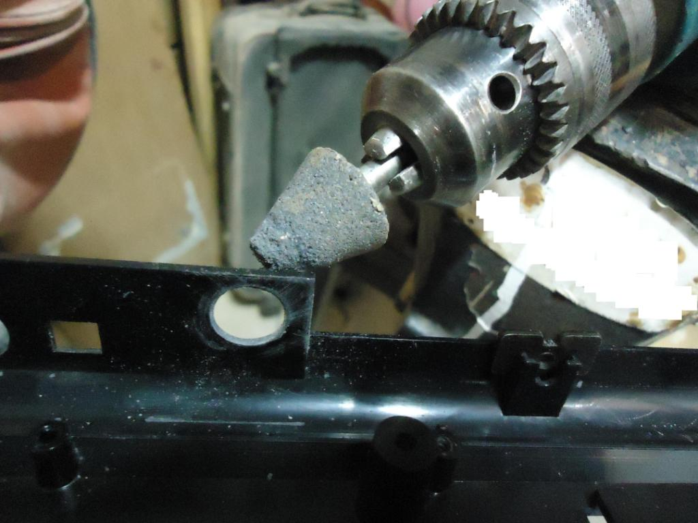
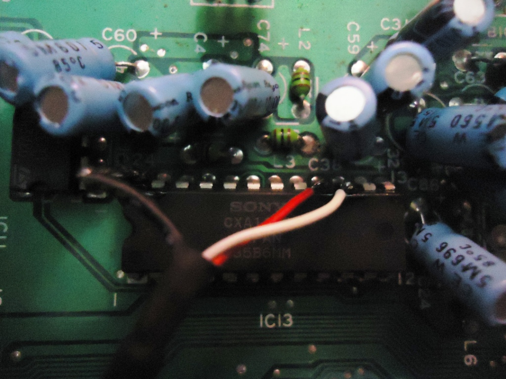

Mega Drive - Como instalar uma saída S-Video no Mega Drive 1/2/Genesis
 :::. Por Gigacom - Alguns video games como o Super Nintendo, possuem nativamente a capacidade de exibir imagens por um cabo S-Video, o que resulta numa imagem de qualidade e definição muito melhor que a do video composto (o popular cabinho amarelo). O Mega Drive não é preparado para exibir imagens em S-Video, mas você irá aprender agora como adaptá-lo para isso.
:::. Por Gigacom - Alguns video games como o Super Nintendo, possuem nativamente a capacidade de exibir imagens por um cabo S-Video, o que resulta numa imagem de qualidade e definição muito melhor que a do video composto (o popular cabinho amarelo). O Mega Drive não é preparado para exibir imagens em S-Video, mas você irá aprender agora como adaptá-lo para isso.
Quando eu era criança, a qualidade de uma imagem para mim era definida pelo número de chuviscos, fantasmas e interferência que ela apresentava, quantos menos disso, melhor. Hoje a saída RF já não me agrada tanto assim. Ela querendo ou não, não apresenta a mesma nitidez e definição que uma saída AV. O pior é que a saída AV, por mais limpa e nitida que seja em relação a RF, ainda passa meio longe quando colocamos ela no páreo com a S-Video... é bem sabido que uma saída S-Video em consoles antigos melhora imensamente a qualidade de imagem, as letras ficam mais bem definidas, os detalhes dos personagens aparecem com mais detalhes, as cores são mais vivas. O problema é achar um cabo S-Video para os video games, e a coisa piora mais ainda quando o video game em questão não tem suporte ao S-Video.
Como disse lá no inicio, o Mega Drive não possui uma capacidade nativa de exibir imagens em S-Video, mas é possivel de uma maneira bem barata e simples, adaptar o velho Meguinha para isso. Então, anotem aí a receita do que irão precisar:
1 - 2 resistores de 75 Ohms (na falta, pode ser um de valor aproximado)
2 - 2 capacitores de 220/16V
3 - Plugue S-Video
4 - Alguns pedaços de fios
5 - Ferro de solda de baixa potência e estanho para solda
6 - Furadeira
7 - Plano de saúde para usar em caso de acidente com a furadeira ou ferro de solda
Preparando o console
A primeira coisa a se fazer é ver onde será instalado o plugue S-Video no console. Então, abra o console e veja o melhor lugar para se instalar o plugue no plástico do video game. No exemplo que apresento aqui, decidi instalar bem proximo a saída RF do console, no lugar onde deveria estar o conector Ext. do Genesis (que sabe Deus porque nunca esteve lá ). Porém, caso o seu Mega possua a portinha Ext., escolha outro lugar que mais lhe agrada. Você pode conferir nesse artigo uma foto de um Genesis com saídas AV e S-Video instalada em um lugar diferente, só para te dar uma ideia.
). Porém, caso o seu Mega possua a portinha Ext., escolha outro lugar que mais lhe agrada. Você pode conferir nesse artigo uma foto de um Genesis com saídas AV e S-Video instalada em um lugar diferente, só para te dar uma ideia.
No meu caso, logo que decidi onde instalar o plugue, coloquei uma fita adesiva verde com um furo no meio para me orientar na hora de fazer o orificio. A maneira ideal de se fazer um orificio desses num console é usar uma miniretifica. Porém, como esse negócio é meio carinho e quase ninguem tem, você pode usar uma furadeira com controle de velocidade. A maioria das furadeiras tem um gatilho com esse tipo de controle, e funciona mais ou menos como um acelerador, se você pressionar de leve, a broca irá girar bem devagar, e conforme se aperta o gatilho, a velocidade de giro aumenta.
Então, aqui o segredo é simples. Primeiro, com uma broca beeeeem fininha, faça um furo mais ou menos no centro do orificio que você quer fazer, esse furinho servirá de guia para uma broca maior, facilitando bastante o serviço.
Depois de fazer o furinho, pegue a furadeira e com bastante cuidado, encoste a ponta da broca nesse furinho e pressione bem de levinho o gatilho da furadeira. Se você estiver inseguro quanto a isso, dê uma treinada em um pedaço de madeira até pegar a manha. O detalhe aqui é não deixar a broca girar rápido de mais, senão o plástico acabará derretendo por conta do atrito, e tambem nem deixar a broca girar devagar demais, senão não fura nada.
Caso você tenha uma retifica, ainda assim recomendo que faça um furinho guia, para poder auxiliar na raspagem do plástico até formar o orificio. A dica para quem tem só uma furadeira, é para que procure uma ponta de lixa igual a que está na foto abaixo. Essas pontas costumam não ser caras, e são facéis de se achar em lojas de carpintária, e podem ser usadas numa furadeira para dar um acabamento melhor e até fazer um buraco mais decente .
.

Nesse exemplo, o plugue S-Video que comprei veio com um orificio para auxiliar a encaixar ele em partes plásticas. Esse orificio serve para se colocar um parafuso, então aproveitei que estava com a broca na mão, e fiz o buraquinho para colocar o parafuso:
O conector deixei virado de lado, pois se o deixasse em pé, os contatos ficariam encostando na placa mãe, o que não seria muito bom... além do mais, deitado de lado deu para fazer o furinho do parafuso tranquilo.
Soldando os fios
Agora que o conector já tem seu lugar definido e preparado, falta o principal, que é soldar os fios e componentes da maneira correta. O chip que recebera os fios, é o Sony CXA1145p. Sabe aquela peça de metal que fica bem ali perto da saída de video do console? Pois é, ela serve para dissipar o calor produzido por dois transistores e tambem esconde esse chip. Essa peça é parafusada aos transistores e a placa mãe. Desparafase-a, e remova-a com cuidado para não entortar os transistores:
O CXA1145p ficará bem a vista. Ele é relativamente pequeno, e há vários capacitores soldados na placa mãe bem perto dele, o que pode atrapalhar um pouquinho na hora de soldar os fios nele.
Se você notar bem, na imagem acima ha alguns numeros que indicam o pino 1, 12, 13 e 24 desse chip. Iremos soldar 3 fios, um no pino 15, outro no 16 e o ultimo no 24. O pino 15 é o que dá o sinal de chroma, o 16 é o sync e o 24 o terra. Veja a imagem abaixo, ela ilustra onde estão os pinos que nos interessam:
Antes de soldar algo no chip, é preciso fazer o que muitos técnicos em eletrônica chamam de estanhar. O negocio é simples, pegue a solda e o ferro, posicione a solda em cima de um dos pinos onde será soldado um fio, e encoste o ferro de solda para que a solda derreta e se fixe no pino. Não é preciso deixar muita solda em cima do pino, apenas um pouquinho mesmo, faça isso com os demais pinos (nº 15, 16 e 24 apenas). Ah! Tenha cuidado para não esquentar demais o chip. Ele é preparado para suportar o calor do ferro de solda, porém não mais do que alguns segundos. Se esquentar demais... já els. Se preferir, você tambem pode soldar os fios na parte de baixo da placa mãe, nos pontos correspondentes onde o chip esta soldado a placa. Esse local é bem mais tolerante ao calor, mas é preciso prestar atenção para soldar corretamente os fios.
Depois disso, pegue os fios, os 2 capacitores, os 2 resistores e o conector S-video. Tire a pontinha de cada extremidade dos fios, e estanhe-as da mesma maneira que fez no chip, faça o mesmo nas pontinhas dos capacitores, resistores e nos pinos do conector. A razão de se estanhar é uma só, facilitar para que a solda seja feita com sucesso. Se você tentar soldar o fio em cima do chip ou em outra coisa sem estanhar, vai ver que a solda fica bem mais complicada, mas quando há um pouquinho de solda colocada previamente em cada um, as soldas se juntam com muito mais facilidade.
Separe o material, e não esqueça de estanho-los antes de fazer as soldas.
O cabo que estou usando nesse tutorial, é um de audio analógico presente nas gravadoras/leitores de cd de computador. Nem todo computador usa isso (ainda mais hoje em dia), mas esse cabo é ideal para essa operação, pois possui apenas 3 fios, sendo um deles o terra que envolve os demais. Na falta de um cabo desses, use fios comuns de boa qualidade e flexiveis (não recomendo usar fios rigidos, como esses que tem em instalações de aparelhos telefonicos). Mas recomendo fortemente que use fios de cores diferentes, para não confundir na hora de soldar beleza!?
Agora, o esqueminha para juntar esses componentes é o seguinte, você vai pegar um capacitor e soldar um resistor no polo positivo dele. Não sabe qual é o polo positivo do capacitor? Normalmente, quando se compra um capacitor novo, o positivo é sempre o lado que tem a perninha maior. Também não raro o capacitor vem com a indiação + par positivo e - para negativo. Caso ainda assim esteja na duvida, use um multimetro. O resistor não tem polaridade, tanto faz soldar uma perna ou outra dele. Faça o mesmo com o outro capacitor e resistor:
Agora, pegue o conector S-Video, e solde o polo negativo de cada conjunto de capacitor/resistor, nos pontos correspondes aos de nº 1 e 2 do conector:
Por fim, solde o fio destinado ao terra nos conectores de nº 3 e 4. O resultado final será semelhante ao da foto abaixo:

Bem... pode ser que desse modo não agrade muita gente, pois o que mais se vê por aí é o pessoal soldando os capacitores e resistores em série numa plaquinha, para depois soldar uns fiosinhos unindo essa plaquinha ao conector. Mas só para lembrar, o objetivo desse artigo é mostrar a maneira mais prática, barata e eficiente de se fazer esse negocio. Depois de tudo soldado, passe um pouco de fita isolante para evitar que os contatos dos capacitores e resistores se toquem.
Agora, chegou a hora de soldar os fios no chio CXA1145p. Note que para soldar os fios no concetor S-Video não falei para soldar determinado fio em determinado ponto, pois aqui no chip é que se deve soldar os fios em seus pontos correspondentes. Tomando como base o esquema do conector S-Video aqui em cima, você deve soldar o fio do conector de nº 1 na perninha do chip de nº 15, e o fio do conector de nº 2 na perninha do chip de nº 16. O terra do conector deve ficar na perninha de nº 24 do chip:
Esquema da instalação.

Um exemplo de como pode ser feita a solda dos fios no chip.
Agora que já está tudo soldado, recomendo que se faça um teste antes de remontar o console. Ligue ele, coloque um cartuchinho bacana, e veja se a imagem está ok. Não raro, na hora de soldar os fios acaba-se confundindo na hora de soldar no conector S-Video, resultando em uma imagem em preto e branco. Se isso ocorrer, só inverter os pontos que estará resolvido. Ah! Cuidado com os transistores do Mega! Eles esquentam MUITO e rapidamente (por isso que eles possuem aquela chapinha de metal parafusada neles), portanto, tenha cuidado para não se queimar e tambem para não deixar eles torrarem! Ligue o console rapidamente, faça o teste, desligue e espere os transistores esfriarem antes de continuar o trabalho.
Agora, recoloque a placa no plástico do console, e parafuse o conector no orificio feito no plástico. Note que caso o conector fique meio frouxo, você poderá usar massa époxi para fixá-lo melhor. Se for usar a massa, coloque algo dentro dela que seja bem rigido, como um pedaço de clip grosso, assim o conector ficará bem firme:
E pronto, agora só curtir o seu Mega Drive com uma imagem bem melhor que a orifinal.
Acesse o Trombone e comente sobre essa matéria!


O Master System 3 foi mais fatiado que carne de segunda antes de ser moída... tiraram o suporte ao óculos 3D, colocaram uma travinha meio vagabunda para servir de liga/desliga, sumiram com o botão reset e com as saídas A/V... ...